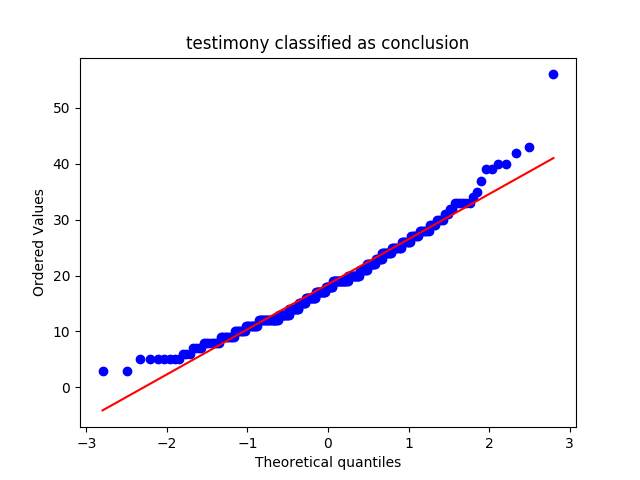
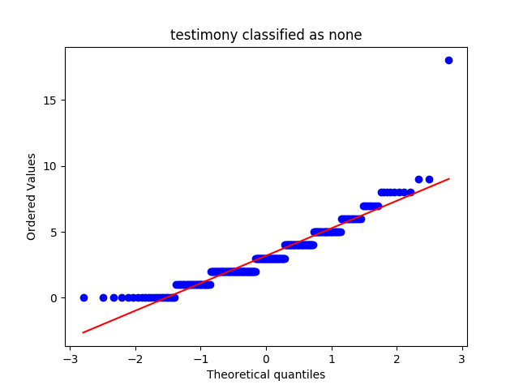
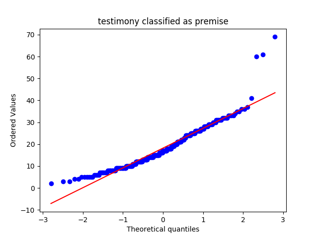
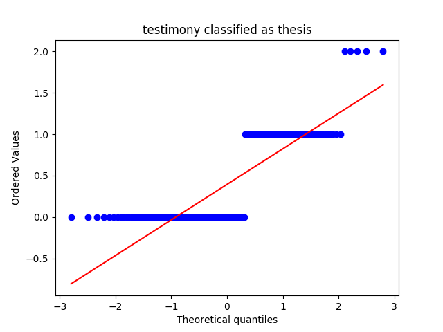
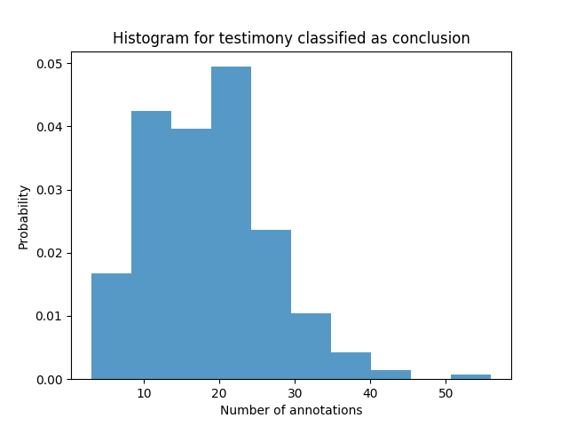
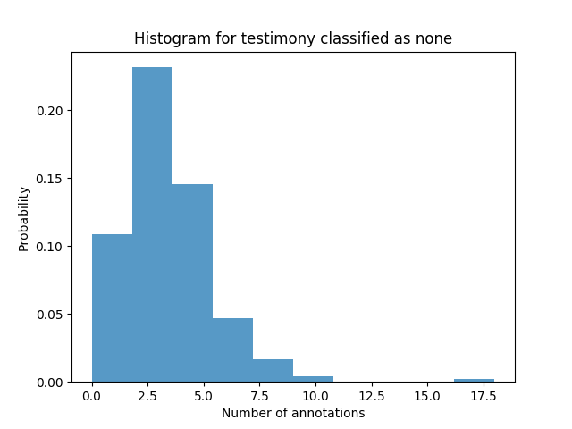
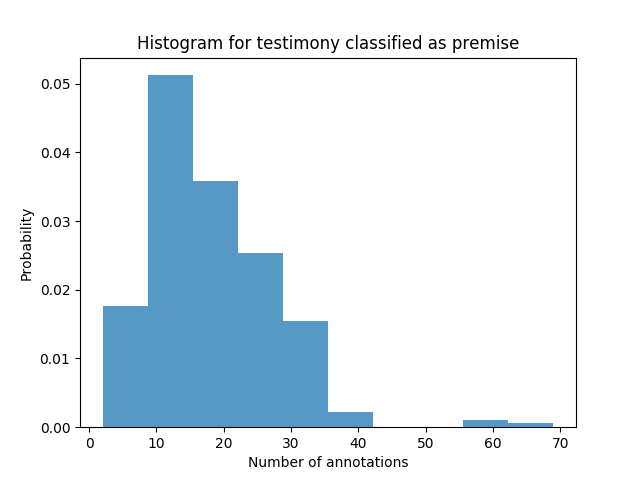
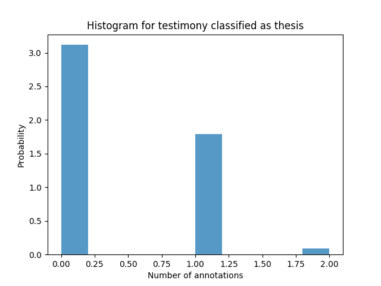
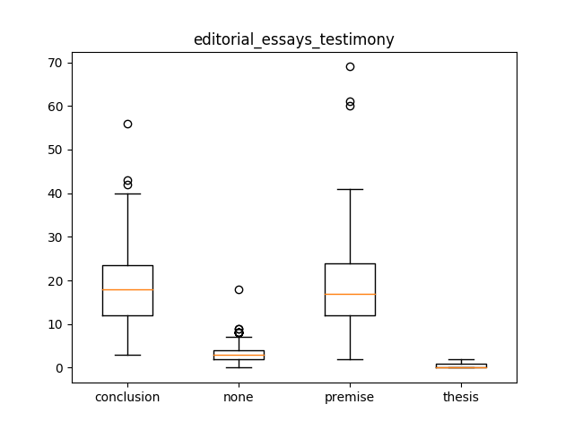

editorial_essays_testimony
Describing the Data-Set
Mean, Median and Standard Deviation
|
conclusion |
none |
premise |
thesis |
| median |
18.000000 |
3.000000 |
17.000000 |
0.000000 |
| mean |
18.446494 |
3.188192 |
18.202952 |
0.394834 |
| std |
8.151013 |
2.186340 |
9.390235 |
0.525205 |
QQ Plots




Histograms




Box Plot(s)

Normalization Test
stat: 0.963233530521, p-val:2.13429393625e-06
Not Normally distributed for testimony classified as conclusion
stat: 0.894010782242, p-val:7.69612780623e-13
Not Normally distributed for testimony classified as none
stat: 0.912557244301, p-val:1.77659276179e-11
Not Normally distributed for testimony classified as premise
stat: 0.654590666294, p-val:4.16332071239e-23
Not Normally distributed for testimony classified as thesis
Significancy Test
Using friedmann-test
Using friedmann-test
using stats.friedmanchisquare
chisq: 695.875514019
p-value: 1.64581373476e-150
statistic: 1470.59830935
p-value: 1.11022302463e-16
chi2:686.888191882
ranking[1.9280442804428044, 1.1014760147601477, 3.4833948339483394, 3.4870848708487086]
Post Hoc Analysis (holm_multitest):
------------------------------------------------------
Comparing: none vs premise
z_value: 14.0240535328
p_value: 0.0
adj_p_value: 0.0
--------------------------------------------------------------------------
Comparing: none vs conclusion
z_value: 14.0573253087
p_value: 0.0
adj_p_value: 0.0
--------------------------------------------------------------------------
Comparing: premise vs thesis
z_value: 21.4769313296
p_value: 0.0
adj_p_value: 0.0
--------------------------------------------------------------------------
Comparing: thesis vs conclusion
z_value: 21.5102031055
p_value: 0.0
adj_p_value: 0.0
--------------------------------------------------------------------------
Comparing: none vs thesis
z_value: 7.45287779679
p_value: 9.12603326242e-14
adj_p_value: 1.82520665248e-13
--------------------------------------------------------------------------
Comparing: premise vs conclusion
z_value: 0.0332717758785
p_value: 0.97345786088
adj_p_value: 0.97345786088
--------------------------------------------------------------------------